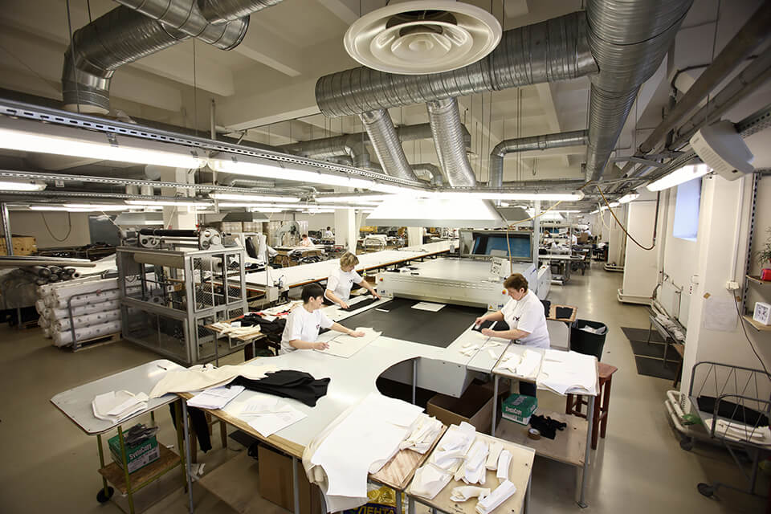
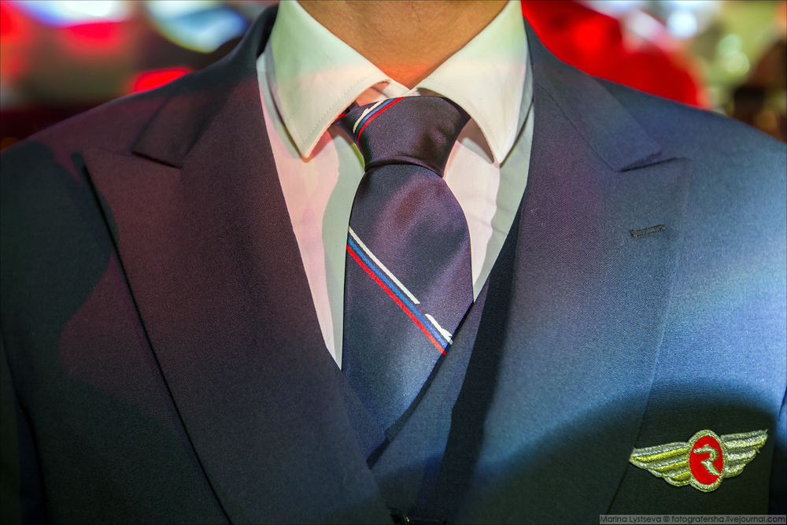
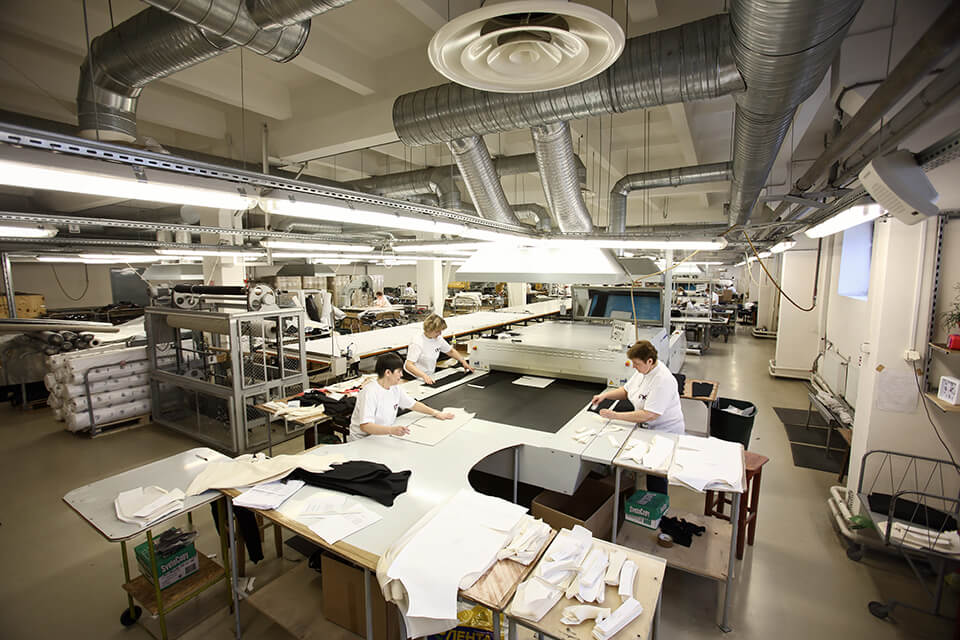
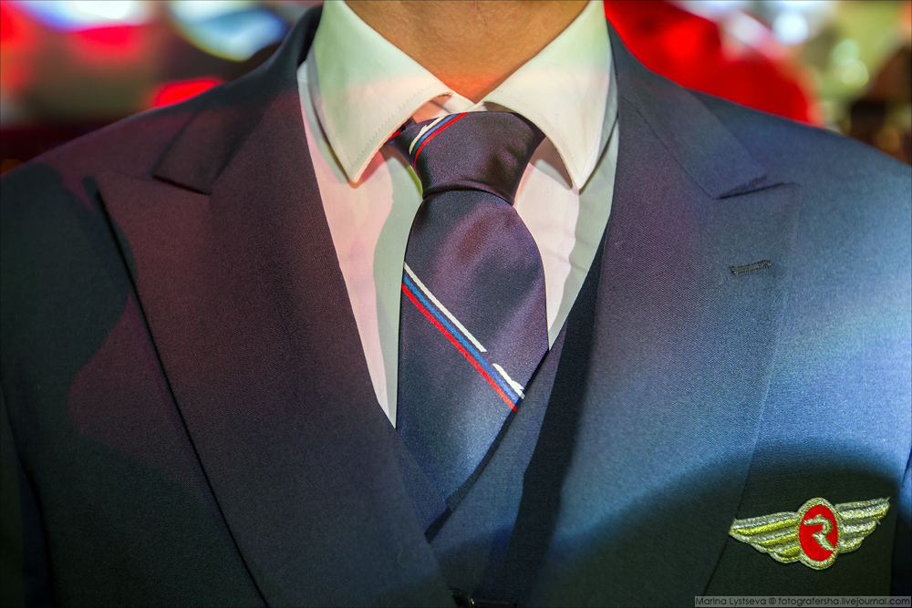

Project Administrator
Industrial Complex BTC Group Inc.October 2014 - February 2015
Saint-Petersburg, Russia
When the processes of the Ulmart Project Office, built by me and my colleagues, began to work automatically and the volume of my work decreased significantly, I decided to try myself in the same role as a Project Administrator in the largest industrial complex of the consumer goods industry in Russia, the BTC Group.
BTC Group develops high-tech tactical clothing using home-made flame-resistant, wind-protective, and water-repellent materials. Their product solutions cover the range from multifunctional suits for heavy industrial and climatic conditions to providing employees of enterprises with uniform clothing.
The processes of the Project Management Sales Department (PMSD) of BTC Group, where I was hired to work as an experienced project administrator, were so clearly built that the Project Management perfectly ensured the effective implementation of all stages of projects - from the development of tailored models for individual customers’ needs to the preparation of all technical documents.
Proficient in:
-
Project Reporting;
-
Project Execution Control;
-
Conduct of Negotiations;
-
Database Architecture;
-
Document Management.
Professional Experience
The PMSD provides the complete cycle of manufacturing clothing: cutting, tailoring, and final processing of finished garments of varying complexity and design. My colleagues were four more project administrators, whose areas of responsibility included project management in certain areas of production.
My area of responsibility included the management of 15-20 projects for the production of professional uniforms and special clothing for aviation workers (e.g., Rossiya Airlines JSC) and railway conductors (e.g., Russian Railways JSCO).
I coordinated the interaction of all structural divisions of the factory at all stages of project execution. This included identifying and solving problems, analyzing projects' risks, and keeping variations and errors in production processes.
Every day I held meetings and recorded the decisions made on 3-5 projects by project managers, sales managers, designers, fabric and accessories suppliers, production department, and project office.
Main Tasks and Responsibilities
-
Collaborate with Project Managers and other functional teams (Development, QA, Design, Maintenance, Production) and other involved people to support overall project control delivery.
-
Providing expertise in Project Management by contributing to the day-to-day management of project data in a supported service area.
-
Using Project Management tools: models, prototypes, schemes, diagrams, and templates.
Describe Yourself
I’m conscientious. I really pay attention to details. I check little details. I put a lot of effort into my work.
I’m really resourceful. I’m able to think of creative solutions in difficult situations.
I’m reliable. I’m consistently good at quality or performance. I’m able to be trusted with responsibility.
I’m responsible. I have good judgment and I make good decisions. I’m able to act correctly and make decisions on my own.
I’m adaptable. I can adapt quickly to change. I adapt my performance and duties to different situations.